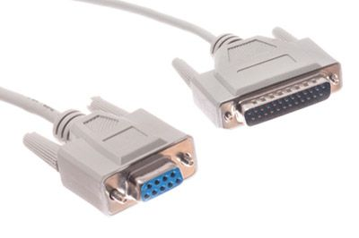

初识物联网

射频技术 智能穿戴 智能电器 智慧家庭 智能交通 共享单车 无人机运输 智慧医疗
初探物联网
1992年 物联网的诞生–（特洛伊咖啡壶）剑桥大学对于一个普通咖啡壶的监测.
1999年 Kevin Ashton在MIT首次提出物联网概念 RFID（射频识别）技术和设备，按预定的通信协议执行
2005年 国际电信联盟引用物联网概念
2008年 IBM提出智慧地球概念
2009年 ”感知中国“把我国物联网推向高潮
2013年 德国”工业4.0“
2015年 “中国制造2025”发布
物联网发展时期划分
1999年-2013年 概念阶段–仅涉及无线射频的物
2014年-2016年 智能穿戴、智能家居
2016年-至今 智能穿点、智能家居成熟落地，物联网生态系统建设打下良好的基础。
云-管-端的逻辑体系
应用层 负责数据呈现及客户交互
平台层 负责设备通信管理、数据存储、业务规划等
网络层 负责终端接入和数据传输
感知层 负责信息收集和信号处理
垂直行业应用划分
- 公共事业物联网
- 车联网
- 工业物联网
- 智慧家庭物联网
| 通信技术 | 特点 | 业务应用 |
|---|---|---|
| 4G 5G LTE-V |
传输速率>10Mbps 功耗较高 成本较高 |
车联网 视频监控 智能机器 |
| eMTC GPRS |
传输速率~1Mbps 功耗较低 成本较低 |
智能穿戴设备 梯联网 电子广告 无线ATM |
| NB-IoT LoRa |
传输速率<100Kbps 功耗低 成本低 覆盖广 |
远程抄表 智能停车 智慧农业 |
有线通信
优点稳定性强，可靠性搞
缺点 受限于传输媒介
以太网
现有局域网采用的最通用的通信协议标准
- 标准以太网、快速以太网、10G以太网
- 我们熟知的路由器宽带就是以太网技术
RS-232

EIA制定的异步传输标准接口
- 不平衡传输方式：单端通讯
- 不超过20m
- 一对一通信
- 常见于监视和控制系统中
EIA全称 Electronic Industries Alliance 电子工业联盟
RS-485
RS232进化体
- 是为了解决RS-232只能实现点对点通信，不能实现联网
- 平衡传输：差分传输
- 几十米到上千米
- 总线上允许连接128个收发器
M-Bus（Meter Bus）
户用仪表总线
- 一种用于非电力户用仪表的欧洲总线标准
- 基于osi的七层网络参考模型，只使用到了物理层、链路层、网络层、应用层，除此之外还加了管理层以便于对任意层次进行管理
- 远程抄表、远程供电或电池供电系统的特殊要求
- 适用于公用事业仪表的可靠、低成本的组网要求，几公里连接几百个从设备
PLC
电力线通信
- 利用电力线传输数据和媒体信号的一种方式
- 通过载有信息的高频加载与电流，用电线传输接收信息的适配器，再把高频从电流中分离出来
- 适合于通过电力线通信将电表的数据传输到工业网关上，作为家庭网络，监控频传输接收到显示器上
无线通信
蜂窝移动通信（2\3\4G）
共享单车、POS机、ATM机
短距无线通信
Bluetooth
大容量、短距离、无线数字通信技术标准
由爱立信创建，作为RS232的替代方案
实现固定设备、移动设备和楼宇个人域网之间的短距离数据交换
使用2.4-2.485GHz的ISM无线电波，最高1Mbps，最大传输距离为10cm-10m（可以通过增加功率达到100m）
手机、蓝牙耳机、蓝牙音箱、智能穿戴、家电设备
优点：低功耗、速率快、安全性高，
缺点：网络节点少，不适合多点布控
WiFi
Wi-Fi是一种允许电子设备连接到一个无线局域网(WLAN)的技术,通常使用2.4G UHF或者SHF ISM的射频频段
优点：覆盖范围广，数据传输速率快，
缺点：传输安全性不好，稳定性差，功耗率高
ZigBee
ZigBee是基于IEEE802.15.4标准的低功耗局域网协议
运用于工业和智慧家庭
优点：近距离、低复杂度、自组织、低功耗、地数据速率
缺点：物体阻挡后信号会衰减、不同芯片兼容性较差，网络较灵活，不易维护
Z-Wave
是一种新型的基于射频的、低成本、低功耗、高可靠的短距离无线通信技术
用于住宅照明，商业控制以及状态读取应用（抄表、照明、火灾检测等）
有效无盖范围在室内是30m，室外可超过100m
优点：网络结构简单、低功耗、低成本 、可靠性高
缺点：速率较低，标准不开放，芯片只能通过Sigma Designs这唯一来源获取

万物互联LPWA
Low power wide Area 低功耗广域网
SigFox：
- 低功耗低成本的无线物联专用网络
- 使用UNB（超窄带）技术
- 传输功耗水平非常低，可以维持一个稳定的数据连接
LoRa
- 是基于开源的MAC层协议的低功耗广域网标准，同时基于Sub-Ghz的频段使其更容易以较低功耗远距离通信
- 基于扩频技术的超远距离无线传输方案
- 实现远距离、长电池寿命、大容量的系统、进而扩展传感网络
NB-Iot
- 是构建于蜂窝网络的窄带物联网
- 可直接部署与GSM网络、UMTS网络、LTE网络
- 具有覆盖广、连接多、速率低、成本低、功耗低、架构优等特点
- 远程抄表、资产追踪、智能停车、智慧农业